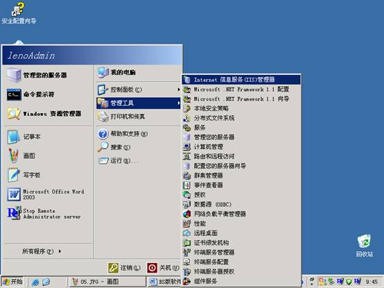
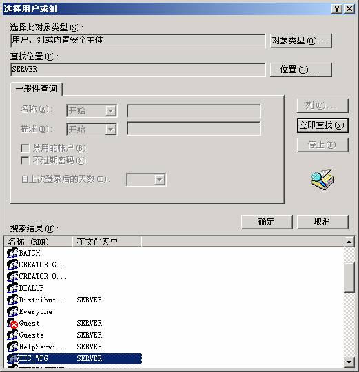

服装进销存管理系统WEB版B/S版本软件的安装与架设
服装进销存管理系统WEB版管理软件B/S版本是基于Internet
WEB的综合应用解决方案，IIS （Internet
Information Service），互联网信息服务是 Windows 阵营的 Web 服务器产品，从 5.0 版本开始逐渐成熟，以安装配置简单著称，IIS不需要过多设置，就可以轻易实现网站的安装。 IIS可安装的操作系统中2003在安装操作系统时就默认安装了。因此无论是架设在局域网又或是互联网，前提条件是必须要一台Windows2003操作系统的主机作为服务器电脑。
第一步：IIS的安装与配置
Windows Server 2003操作系统下安装IIS，若操作系统中还未安装IIS服务器，可打开“控制面板”，然后单击启动 “添加/删除程序”， 在弹出的对话框中选择 “添加/删除Windows组件”，在Windows组件向导对话框中选中“Internet信息服务（IIS）”，然后单击“下一步”，按向导指示，完成对IIS的安装。
①选择“应用程序服务器”，点击详细信息，如下图：
②都勾选上，如下图所示：
第二步：启动Internet信息服务（IIS）
Internet信息服务简称为IIS，单击Windows开始菜单---所有程序---管理工具---Internet信息服务（IIS）管理器，即可启动”Internet信息服务”管理工具，如下图所示：

第三步：配置IIS
IIS安装后，系统自动创建了一个默认的Web站点，该站点的主目录默认为C:\\Inetpub\\www.root。用鼠标右键单击”默认Web站点”，在弹出的快捷菜单中选择”属性”，此时就可以打开站点属性设置对话框，（如图4）在该对话框中，可完成对站点的全部配置。
默认Web站点属性，如下图所示：
第四步：主目录与启用父路径
单击”主目录”标签，切换到主目录设置页面，（如图5）该页面可实现对主目录的更改或设置。注意检查启用父路径选项是否勾选，如未勾选将对以后的程序运行有部分影响。（如图6），主目录―配置---选项。
默认Web站点主目录设置，如下图所示：
默认Web站点启用父路径设置，如下图所示：
第五步：Web服务扩展允许
①控制面板->管理工具->IIS(Internet服务器)-Web服务扩展->ActiveServerPages->允许；②控制面板->管理工具->IIS(Internet服务器)-Web服务扩展->在服务端的包含文件->允许。如下图所示：
第六步：权限设置
①控制面板->管理工具->IIS(Internet服务器)-默认网站－右键）权限，如下图所示：
②添加IIS用户组，点击“添加”，如下图所示：
③点击“高级”，如下图所示：
④选择用户或组，找到“IIS_WPG”，如下图所示：

⑤点击确定按钮，即可添加进来了，将“IIS_WPG”的权限全部勾选上，如下图所示：
第七步：设置主页文档
单击”文档”标签，可切换到对主页文档的设置页面，主页文档是在浏览器中键入网站域名，而未制定所要访问的网页文件时，系统默认访问的页面文件。常见的主页文件名有index.htm、index.html、index.asp、index.php、index.jap、default.htm、default.html、default.asp等，IIS默认的主页文档只有default.htm和default.asp，根据需要，利用”添加”和”删除”按钮，可为站点设置所能解析的主页文档。
由于服装进销存管理系统WEB版B/S版本软件的默认的主页文档名为“login.asp”，因此需要在添加了以上文档名称后，增加“login.asp”，如下图所示：